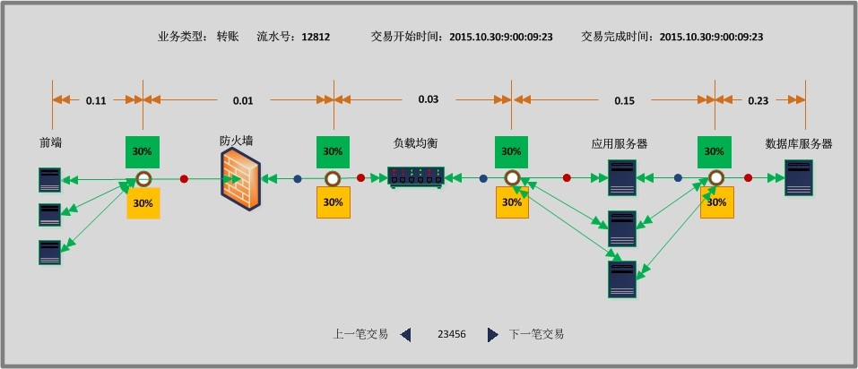

全景易视（EASYVIEWS）”是基于大数据技术，以交易为纽带的业务性能监控管理平台。通过旁路方式获取流量数据，可以实现业务系统交易级、端到端的全路径监控，并对相关信息进行关联分析，实时发现、预测并精准定位业务系统出现的各种性能问题。从业务视角实现用户体验监控，告别被动处理问题的局面。并备有丰富的数据交换接口，能够对基础资源、网络流量、日志信息、应用系统到单笔交易等进行统一的智能可视化管理。
技术架构图

从业务视角实现应用系统端到端的全路径监控
能够覆盖端到端的主要业务服务路径，可以展现每笔交易在各个组件环节所耗费的时间，提供准确的性能评估和告警信息，在第一时间将问题定位于某个组件层级。智能关联分析：
EASYVIEWS平台将IT数据进行多维智能关联分析，包含业务、应用、网络、基础设备、日志等不同类型数据，进行自动关联分析，挖掘有价值数据。大数据平台：
统一大数据处理平台，实时快速处理数据并将结果实时展现。可扩展性
普通服务器构建集群，系统可线性扩充存储容量和处理能力。今天的IT环境变得越来越复杂，各种各样的设备、应用以及监控工具，都处于爆炸式的增长中。
★ 在这样一个复杂的环境下，如何稳定IT运维环境？
★ 如何快速提高服务水平？
★ 如何最小化停工时间？
★ 如何最小化系统修复时间？
★ 如何获得更好的用户体验？
这所有的问题的答案就存在于您的数据之中。全景易视（EASYVIEWS）基于大数据技术的可视化智能业务性能管理系统，可以帮助您充分挖掘数据的价值，揭露隐藏在数据中的真相，当问题出现时，可以快速分析并定位问题所在，而且通过对大数据的运用，可以提前预测或将出现的问题，从根本上杜绝业务性能下降所带来的影响，并有效进行故障排查，提高IT运维团队的效率。
EASYVIEWS平台提供了不同数据类型的统一入口，它拥有强大的分析能力，可研究各种数据之间的关联关系，预测可能的故障，从大量数据中分离出关键事件，整合所有关联信息。
运维团队受益
因为具有强大的性能分析能力，能够整合并自动处理大量杂乱无章的数据，第一时间发现网络及应用性能下降，并快速分析出影响性能的原因，排除故障速度慢问题，提高运维管理精细化和智能化水平。数据分析人员受益
系统提供基于业务视图的性能监控能力，提供了解决问题的引导式建议，对支撑业务系统的应用及网络性能的下降能够及时反馈出对业务的影响，并定位问题所在，从而帮助运维人员迅速排除故障，极大的缩短了排障时间，降低故障排查时间成本。企业受益
提供以交易为纽带，基于业务的统一性能管理，能够对支撑整个业务的网络及应用性能进行实时监控和分析，摆脱了传统的孤立监控模式，转变现有的人工排障方式，实现自动化与智能化的管理，进一步降低人力成本。在今天复杂的IT环境中，故障排除是一项复杂、需要大量人工处理的工作。EASYVIEWS帮助您的团队告别复杂繁重的传统故障排除法，快速辨别出根本问题所在。快速解决问题是保证业务性能持续平稳，并推动企业前进的关键因素。
实时告警
对业务数据实时分析，对交易性能指标、应用性能指标、网络性能指标等综合分析，实时发现问题。引导式故障排查
连贯的问题分析步骤，快速进行故障排除，找到问题的根本所在。可视化分析
通过使用简单生成图表的功能，辨认趋势，精准地定位问题，轻松地将任意时间段内毫无关联的数据进行可视化。关联分析
通过大数据平台，对不同类型的数据进行智能关联分析，精准定位问题。全量多维数据分析，对业务进行全方位监控。智能预测
依托通用动态基线模型，从历史数据中自动学习，预测未来性能的表现，以及可能会出现的问题。内容框架
高扩展的数据集成能力，单点支持10G网络线速抓包与分析，支持多类型数据采集，如流量、日志、数据库等。EASYVIEWS提供丰富的数据输出接口，方便用户获取各类型数据。大数据计算及存储
无限水平线性扩充的大数据计算及存储平台。